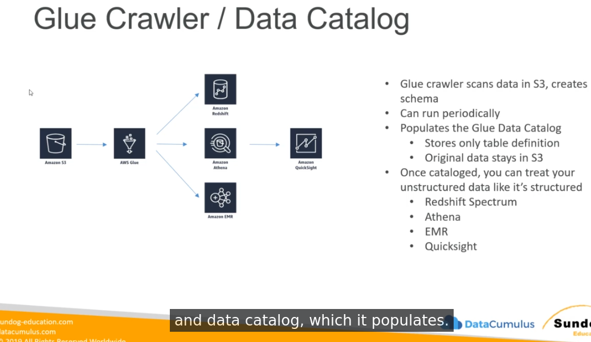
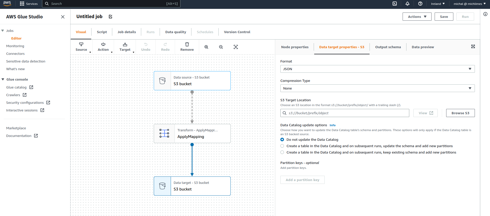

What is it
Contents
What is it#
Serverless system used as a central metadata and schema repository for datalake.
The purpose is to extract structure (schema) from unstructured data and serve extracted structure as a schema for other tools - Athena, Redshift, EMR. So in other way - if you have unstructered data, glue allow you to query those data using structured query language (SQL)
The other thing Glue does is custom ETL jobs (using Apache Spark under the hood) - Glue can process schema using event driven processes or schedules.
AWS Glue subservices#
Glue Crawler / Data Catalog#
crawler scans data in S3, creates schema automatically
can be run periodically or on demand
populates Data Catalog
data are not copied, stays in their places on S3, just schema is added on them

AWS Glue partitions#
Crawler can extract partitions based on how data is organized in S3
you need to think about how you will be querying datalake and implement this in your s3 structure
partitions should be ordered from the most often queried to less often queried, because by using partitions it will limit amount of data which has to be scanned by bigdata tools
Glue and Hive#
Hive can query AWS Glue databases and their schemas - you can use HiveQL (similar language to SQL) to query data crawled into AWS Glue metastore.
You can also import hive metadata store into AWS Glue.
AWS Glue ETL#
automatically generate code for interfaces created by user to transform data
before Glue Studio introduction, user had to write his custom code based on boilerplate shared by AWS
uses Scala or Python and run generated code in Apache Spark (uses custom AWS code - awsglue library)
you can provide your own Apache Spark code (scala or python)
handles encryption
can be event driven (so you can have processes which are started automatically after certain change in your AWS account is made)
can provision additional “DPU’s” (data procesisng units) when builtin aws glue etl efficiency is not enough
errors are reported directly to cloudwatch
targets can be S3, JDBC (RDS, Redshift) or Glue Data Catalog (create table in glue metastore)
fully managed, cost effective (pay only for the resources consumed)
apache spark platform used in etl jobs is serverless
job created in AWS Glue Studio is under the hood json file - so you can store it outside in version control (there is also option of Version Control directly in AWS Glue Studio)
in 2022 AWS added Data Quality steps which allows you to implement Data Quality inside jobs
Dynamic Frame#
basic object used in glue studio etl jobs - it’s a spark dataframe with additional etl functions which expands default functionality of dataframe
in simillar way as spark dataframe contains many datarows, dynamicframe contains one or mode DynamicRecord. Each dynamicrecord contains fields/columns.
Available Transformations#
bundled transformations:
DropFields, DropNullFields
Filter (filtering records based on function)
Join
Map (add custom fields, add calculated fields, perform external lookups)
ResolveChoice (resolve ambiguities in dataframe - when more than one column has the same name)
make_cols - creates a new column for each data type
cast
make_struct
project
machine learning transformations
FindMatchesML - identify duplicate or matching records in dataset (based on fuzzy similarity)
format conversions
CSV, Json, Avro, Parquet, ORC, XML
any other apache spark transformations (including Spark MLLib transformations)
AWS Glue Data Catalog modify#
it is possible to update Glue Metastore based on glue etl jobs:
to add new partitions, you rerun glue crawler or enable option Data Catalog update options to do this automatically based on data in job run
to update table schema, you rerun glue crawler or enable option Data Catalog update options to do this automatically based on data in job run
to create new table - enable option Data Catalog update options to do this automatically based on data in job run
you can do all of those operations inside your etl job code (custom code required)

Restrictions:
tables data must be located on S3 only
json, csv, avro and parquet only
parquet requires special code
nested schemas are not supported
Development Endpoints#
allows for develop etl scripts using notebook environements, but it looks like engine only, you need to have client which can connect to this instance.
Running Glue jobs#
time-based schedules (like any cron style runs)
Job bookmarks
used to persist state from the job run
allows for running job for increment processing
prevents from reprocessing of old data
only handles new rows, not updated rows
CloudWatch events
you can fire lambda function or sns notification when ETL succeeds or fails
invoke ec2 run, send event to kinesis, run Step Functions
Cost model#
You pay for:
Glue Data Catalog - for number of objects and access to the Glue Data Catalog (first million is free)
Glue ETL Jobs - for the time it takes to run your Glue ETL Jobs (based on DPUs which are in some way multiplication of power of node and time consumed by node). Billed by the second
Glue Developement Endpoints - same as for etl jobs - payed for DPU used by number of time, minimum billing duration is 10 minutes. Billed by minute.
Glue Triggers -
Glue Crawlers - similar to etl jobs, pay for DPU and duration of crawling data.
Antipatterns#
if you need to use other engines than Spark (use Data Pipeline or EMR)
before 2020 streaming was antipattern, but since April 2020 Glue started support streaming ETL by using APache Spark Structured Streaming